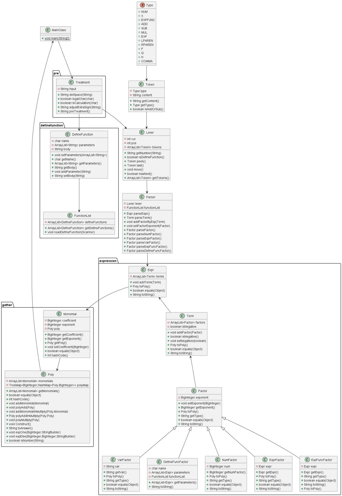
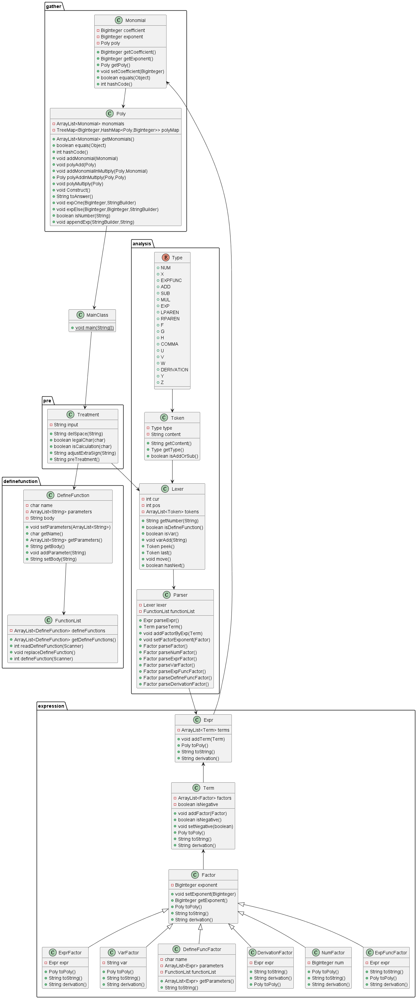
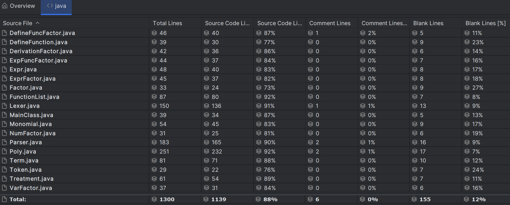

BUAA_OO_Unit1
BUAA_OO_Unit1总结
一、第一次作业hw1
前言
耗时数天完成了代码书写及代码调试，感悟良多，归功于Training中的内容，我在本次作业中也选择了对应的递归下降的思路构造语法树，同时在根据语法树利用逆向思路将解析完的表达式转化为多项式形式，最后多项式存入TreeMap中按要求降序输出结果。此外UML图中单箭头为本人添加，代表核心的依赖关系。
1.代码UML框架

NumFactor,VarFactor,ExprFactor继承Factor父类，既可以调用父类exponet的相关方法，又有各自toPoly的方法，Monomial单项式类用于处理单项式，Poly用于处理多项式，PolynomialAnswer用于最终化简输出
2.代码架构分析
2.1 预处理

根据表达式的形式化表达我们可以得到以下结论：
- 表达式中最多三个连续的
+或者- - 常数因子可以有前导0
- 指数符号后只可能是
token.ADD或者token.NUM - 表达式中可能存在大量
space和\t - 表达式或
(后可能存在符号
于是为了简化后续操作我选择进行的以下操作
- 若读到
+且前面存在其他符号或位于开头则去掉加号 - 若读到
-且前面存在(或者位于开头则在前面加上0，若减号连续则将其换为一个+ - 去掉所有空格
2.2 词法分析与解析部分
2.2.1 Lexer部分
- 在读取到
token.NUM时去除前缀0（但是谨记保证数不会被全部去掉） - 在读取到未知符号时我们选择抛出异常（强烈建议此方法，后续可以快速定位bug）
1 | |
2.2.2 Parse
该部分是代码词法解析的核心部分
我完成了
parseExpr()、parseTerm()、parseFactor()的书写并采用递归下降的方法调用由于预处理我们可以只对Term加上正负属性并且在这里完成项的正负号的确定
在解析项时去掉指数符号，将其全部转化为因子形式
1
2
3
4
5
6
7
8Factor factor = parseFactor();
if (factor.getExponent() == 0) {
term.addFactor(new NumFactor(BigInteger.ONE));
return;
}
for (int i = 0; i < factor.getExponent(); i++) {
term.addFactor(factor);
}
同上在解析未知符号是我们选择抛出异常便于debug
1
throw new RuntimeException("Invalid token");
2.3 根据解析结果转化为多项式
该部分核心思路还是递归思路
Expr -> Term -> Factor
然后多项式中存入TreeMap<Integer,BigInteger> polynomial
最后，我们要得到形如：$Expr = \sum\limits_ { i = 0 } a_i * x ^ { b_i }$
好处：保证有序性和便于得到$a_i$和$b_i$，在此基础上得到一个字符串即可
3.测试思路
3.1.自动化测试
3.11 数据生成
思路还是和解答程序程序相似,按照generate_factor —> generate_term —> generate_expr —>generate_testcase
1 | |
最后随机在生成式之间添加空格
3.12 测试比对
依赖于sympy自带的化简功能实现
1 | |
二、第二次作业hw2
前言
本次作业花费大多时间在构思解决最后的化简上，同时在debug时也遇到了不少问题，但最终一一解决，虽代码相比第一次变化不小，但总体思路大致相同
1.代码UML框架

相比上次增加了自定义函数类、自定义函数集合、自定义函数因子类用于处理自定义函数以及其替换，迭代中发现PolynomailAnswer类作为最终输出由于增加了ExpFuncFactor指数函数类的原因，反而不能起到化简的作用，于是删去了，相关输出在Poly类中实现。
2.作业体会
- 关于使用替换进行函数展开，要注意不要引入新的形参。例如f(y, x)=y+x，展开f(x, x^2)时，若不加任何修改直接用x替换形参y，f就会变为x+x， 再直接用x^2替换所有形参x，就会变为x^2+x^2的错误结果。因此，可以先将所有形参变为其他形式， 如f(v,u) = v+u，再替换形参v和u就不会发生上述错误。对于
exp(x),由于exp中包含x，可能会影响我们后续对于x的替换，所以在一开始我们可以选择将exp替换为e - 深拷贝与浅拷贝学习，由于JAVA默认一般是浅拷贝，如下我们正常写法应该是
return this.defineFunctions,但是函数的参数替换时可能会涉及多次形参的替换，如果不采用深拷贝的话，会导致第一遍替换后会影响我们到后续的替换。
1 | |
实现深拷贝也有很多种方法，对于String 类型的我们可以new一个String类型对象后赋值，对于某一个自定义对象，我们可以通过以下方法实现：
重写
clone（）方法，但是这种方法某一类有多少个引用类型，我们就要重写多少次，如果存在很多引用类型，那么代码量显然会很大，所以这种方法不太合适。利用序列化序，列化是将对象写到流中便于传输，而反序列化则是把对象从流中读取出来。这里写到流中的对象则是原始对象的一个拷贝，因为原始对象还存在 JVM 中，所以我们可以利用对象的序列化产生克隆对象，然后通过反序列化获取这个对象。 注意每个需要序列化的类都要实现 Serializable 接口，如果有某个属性不需要序列化，可以将其声明为 transient，即将其排除在克隆属性之外。下面是一个例子：
1
2
3
4
5
6
7
8
9
10
11
12
13
14
15
16
17
18
19
20
21
22
23
24
25import java.io.Serial;
import java.io.Serializable;
import java.io.ByteArrayOutputStream;
import java.io.ObjectOutputStream;
import java.io.ByteArrayInputStream;
import java.io.ObjectInputStream;
public class test implements Serializable {
//Serializable的作用是为了实现对象的序列化，只有实现了Serializable接口的类才能被序列化
@Serial
private static final long serialVersionUID = 1L;
private String name;
private transient int age; //transient关键字修饰的变量不会被序列化
public Object deepClone() throws Exception {
//序列化
ByteArrayOutputStream bos = new ByteArrayOutputStream(); //创建字节数组输出流
ObjectOutputStream oos = new ObjectOutputStream(bos);
oos.writeObject(this);
//反序列化
ByteArrayInputStream bis = new ByteArrayInputStream(bos.toByteArray());
ObjectInputStream ois = new ObjectInputStream(bis);
return ois.readObject();
}
}
3.代码架构分析
本次迭代继承了上次大部分的思路，增加了DefineFunction，FunctionList两个类用于读取和储存自定义函数，同时根据提示题意增加了需要的DefineFunctionFactor、ExpFuncFactor类适应新的需求
3.1 自定义函数的替换
由于在于处理中一直没有好的思路实现替换，于是我决定牺牲部分运行的时间，先解析一遍表达式，再将Expr通过递归思路转化为String形式，在这个过程中在DefineFunctionFactor下的toString()方法实现替换，但在这里要注意调用我们储存好的FunctionList的内容时要实现深拷贝
3.2 多项式的化简
本次单项式相比上次多了Poly类对象对应exp（）内部的多项式，多项式类采用以下储存
1 | |
最开始先不断在monomials中添加单项式，后再往polyMap中添加实现化简，注意由于HashMap的key是自定义类，我们需要重写equals（）方法和hashcode()方法
4. debug
CPU超时以及超内存应对
- 慎用异常
异常对性能不利。抛出异常首先要创建一个新的对象，Throwable接口的构造函数调用名为fillInStackTrace()的本地同步方法，fillInStackTrace()方法检查堆栈，收集调用跟踪信息。只要有异常被抛出，Java虚拟机就必须调整调用堆栈，因为在处理过程中创建了一个新的对象。异常只能用于错误处理，不应该用来控制程序流程。
本次bug是由于递归深度过深导致的下面这条数据超内存且超时，尝试了很多提高性能的方法均不奏效，于是被迫更改递归思路
0
(((((((((((x^8)^8)^8)^8)^8)^8)^8)^8)^8)^8)^8)^8
原思路如下，没读到一个因子就根据其次数向项中加入对应数量的因子，后续会导致递归不断深入
1 | |
更改后，在转换为多项式时根据次数乘上对应因子，极大简化了对应的递归深度。
至于Main中的更改，原因在于我采用的是解析String类型字符串再ToString实现替换的功能，当没有需要替换的的函数时就只需要解析一次。综上实现了超内存和超时的问题。
综上，递归解决问题中，如何保证递归的深度不会太深是我们必须需要思考的问题。
5. hack经历
hack时主要还是通过评测机进行初查，但由于python的sympy包无法检测作业中的格式问题，最终主要还是人力排查格式问题，本次通过exp((-x))格式错误hack成功一次。
三、第三次作业
前言
本次作业相比前两次代码量上有所减少，作业核心求导方面还是第一单元的核心思路递归下降解决。但是由于作业难度的加大以及迭代导致本次在debug方面耗费了大量的时间。
1.代码UML框架

增加了求导函数因子，求导过程主要是转化为String类型递归实现。但是注意指数函数（血的教训）的求导如下：
$dx(exp((expr))^n) = ndx(expr)(exp((expr))^n)$
2. 作业体会
derivation()求导函数和toString()类似返回String类型，采用递归下降思路，此外无较大改动。
3. hack经历
本次hack过程，有了上次自己超时的经验，卡着代价函数通过下面数据卡了性能成功一次
1 | |
4. 输出优化
关于输出优化我没做特别的提出exp内部的最小公因数和因式分解操作，但是通过TreeMap<BigInteger, HashMap<Poly, BigInteger>> polyMap的多项式储存方式，通过讨论指数和系数的值通过打表的方式，对于无指数函数多项式的优化几乎是最简形式。
Unit1总结
第一单元的核心是解析表达式，总体处理思路是递归下降构建语法树，总体代码规模如下，为了便于理解，我将Factor抽象为父类，里面实现一些因子类的通用方法，并将所有的因子都对应创建的一个子类从而实现不同的toString(),derivation(),toPoly方法。
1.代码规模以及复杂度

通过与他人对比，发现个人的代码规模还是比较庞大的，主要在于部分类的抽象程度还是不够高，将对应因子以及各类处理都写成了对应的类——因此可以提高抽象程度，例如Expr作为Factor接口下的实例。优点：理解起来较为容易，更改增加新功能较为容易。缺点：随着代码的迭代，增添的代码量相比会更加多。
复杂度如下：
- OCavg : 每个类中所有非抽象方法的平均圈复杂度(继承的方法不计算在内)。
- OCmax : 每个类中非抽象方法的最大圈复杂度(继承的方法不计算在内)。
- WMC : 每个类中方法的总圈复杂度.
| Class | OCavg | OCmax | WMC |
|---|---|---|---|
| MainClass | 2 | 2 | 2 |
| analysis.Lexer | 4 | 16 | 36 |
| analysis.Parser | 2.75 | 7 | 33 |
| analysis.Token | 1 | 1 | 4 |
| analysis.Token.Type | n/a | n/a | 0 |
| definefunction.DefineFunction | 1 | 1 | 7 |
| definefunction.FunctionList | 2.8 | 8 | 14 |
| expression.DefineFuncFactor | 2.33 | 5 | 7 |
| expression.DerivationFactor | 1 | 1 | 4 |
| expression.ExpFuncFactor | 1.75 | 2 | 7 |
| expression.Expr | 2 | 3 | 10 |
| expression.ExprFactor | 2 | 3 | 8 |
| expression.Factor | 1 | 1 | 6 |
| expression.NumFactor | 1 | 1 | 4 |
| expression.Term | 2.86 | 8 | 20 |
| expression.VarFactor | 1.5 | 2 | 6 |
| gather.Monomial | 1.43 | 3 | 10 |
| gather.Poly | 4.13 | 14 | 62 |
| pre.Treatment | 2 | 5 | 12 |
2.调试闹鬼现象的分析
通过讨论区即自己学习，后续作业中可以选择遵循Command与Query分离原则，即命令型方法无返回值，查询型方法不修改字段，不对形参进行副作用操作。
3.作业感想
关于第一次作业，开学第一天就被狠狠上强度，被迫开始速通OO，第二次作业中由于自己测试时没有充分考虑运行时间，所以强测寄了一个点，后续大改后，加上第三次作业较为简单，没出啥问题。
最后，未来建议互测小房间可不可以及时给出被hack的点（出现超时问题需要重构好及时构想，待到下一次作业布置两手抓真的不知道咋办）。